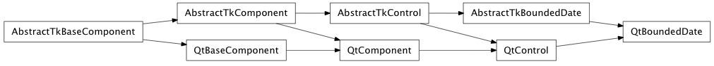

BoundedDate¶
- class enaml.widgets.bounded_date.BoundedDate[source]¶
Bases: enaml.widgets.control.Control
A base class for use with widgets that edit a Python datetime.date object bounded between minimum and maximum values. This class is not meant to be used directly.
- min_date = None¶
The minimum date available in the date edit. If not defined then the default value is September 14, 1752. Extra checks take place to make sure that the user does not programmatically set min_date > max_date.
- max_date = None¶
The maximum date available in the date edit. If not defined then the default value is December 31, 7999. Extra checks take place to make sure that the user does not programmatically set min_date > max_date.
- date = None¶
The currently selected date. Default is the current date. The value is bounded between min_date and max_date. Changing the boundary attributes might result in an update of date to fit in the new range. Attempts to assign a value outside of these bounds will result in a TraitError.
- abstract_obj = None¶
Overridden parent class trait
Backends¶
Qt¶

- class enaml.widgets.qt.qt_bounded_date.QtBoundedDate[source]¶
Bases: enaml.widgets.qt.qt_control.QtControl, enaml.widgets.bounded_date.AbstractTkBoundedDate
A base class for use with widgets implementing behavior for subclasses of BoundedDate.
Wx¶

- class enaml.widgets.wx.wx_bounded_date.WXBoundedDate[source]¶
Bases: enaml.widgets.wx.wx_control.WXControl, enaml.widgets.bounded_date.AbstractTkBoundedDate
A base class for use with widgets implementing behavior for subclasses of BoundedDate.